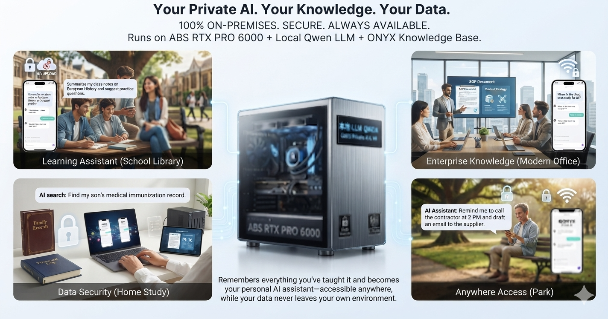

Many successful AI projects don't start with a grand architecture diagram — they start with a small problem that happens every single day. Ours is one of those stories.
Looking back, this project was never about chasing the newest AI technology — every upgrade came from a real need a user raised.
Today, our solution is no longer just an AI search system — it's grown into a complete, private enterprise AI platform. Running on the NVIDIA RTX PRO 6000, we've achieved:
If, at the start, all we wanted was to save the CS team a few minutes of digging through the Wiki —
then today, what we really want is to give every employee more time to solve problems, instead of hunting for answers.
AI's real value isn't just answering questions.
It's letting a company's knowledge actually stick, letting experience carry forward, and giving every employee an AI assistant they can actually trust.
Our story isn't over yet.
We hope more companies join in — pushing private AI knowledge bases forward together, and helping AI become a real force behind enterprise digital transformation.
No cloud accounts to set up, no subscription fee. Models run locally the moment you turn it on.
Common workflows that benefit from an always-on AI that never sends data outside your building.
A question goes in, the AI reasons through it, and a private answer streams back — the reasoning happens entirely on your hardware.
Every question you ask and every document you upload is processed entirely on your machine — never sent to an external AI provider, no data-sharing agreement, no monthly AI subscription. The RTX Pro 6000 handles all reasoning, retrieval, and generation locally, giving you the power of a top-tier AI system without giving up control of your data.
The hardware and software stack behind every response.
| Hardware | |
|---|---|
| GPU | NVIDIA RTX PRO 6000 Blackwell |
| VRAM | 96 GB GDDR7 |
| Context | 150K tokens |
| OS | Windows |
| Access | Browser · Telegram mobile |
| Users | Multi-user · isolated memory per user |
Every hop traced step by step — Telegram, the hub, the model, and back.
Service boundaries, message paths, and every component in one diagram.
Full message processing sequence, service architecture across Windows / WSL2 / Docker, and multi-user memory isolation — with annotated Mermaid diagrams.
Message flow Service architecture Multi-user isolation